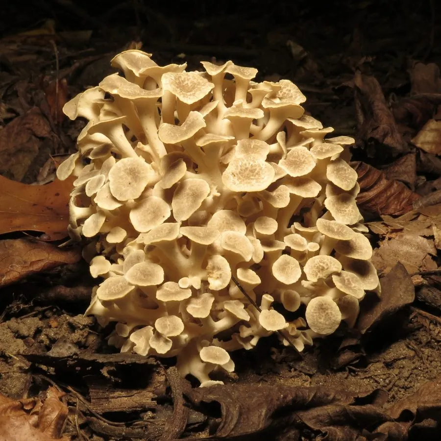

真菌 · 真菌界
猪苓 Polyporus umbellatus

地下长着黑色块状菌核、地表长出多分枝子实体的药用真菌，其菌核是传统中药材，常与蜜环菌伴生。
- 分类
- 门担子菌门纲伞菌纲目多孔菌目科多孔菌科属多孔菌属
- 栖息环境
- 栎树、桦树等阔叶林的林地中，与蜜环菌伴生
- 地理分布
- 中国陕西、山西、云南、四川、吉林等地，东亚其他地区也有分布
- 保护级别
- 暂无评估（IUCN 未评估，野生资源因采挖减少）
物种志
猪苓是担子菌门多孔菌目的药用真菌，由地下的菌核和地上的子实体组成。菌核呈不规则的块状，表面黑色、凹凸不平，内部白色或淡黄色，质地坚硬；子实体从菌核上长出，由许多小菌盖组成多分枝的丛状体，菌盖呈圆形或扇形，直径 1–3 cm，表面灰白色至淡褐色；菌管白色，孢子印白色。
猪苓多生于栎树、桦树、枫树等阔叶林的林地中，与蜜环菌形成伴生关系，在中国陕西、山西、云南、四川、吉林等地有分布。它的菌核是传统中药材，具有利水渗湿的功效，中医常用于治疗水肿、小便不利等症。由于野生猪苓被大量采挖，资源逐渐减少，现已有半人工栽培技术。猪苓的药用价值以菌核为主，采集和加工需要遵循药材规范。
形态与习性
- 菌核不规则块状，表面黑色，内部白色，质地坚硬
- 子实体从菌核上长出，多分枝的丛状体
- 菌盖圆形或扇形，直径 1–3 cm，灰白色至淡褐色
- 菌管白色，孢子印白色
- 药用菌核入药，利水渗湿
- 生境阔叶林林地，与蜜环菌伴生
- 栽培已有半人工栽培技术
趣味知识
- 猪苓的药用部分是地下黑色的菌核，不是地上的子实体。
- 它与蜜环菌形成伴生关系，林地中常同时出现。
- 中医用猪苓利水渗湿，是传统中药材。
- 野生猪苓因大量采挖而减少，现已发展半人工栽培。